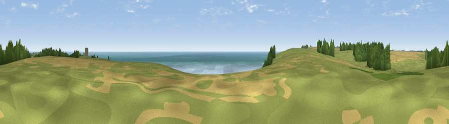

Viewpoint near St. Margaret's at Cliffe
#3937 in England · top 11% of its area beats it · near St. Margaret's at Cliffe · path 177 mWhere it is
The exact computed spot (TR 35412 43112). Click the marker for map links.
Public access: the nearest public right of way is about 177 m away — the final stretch may cross private land. Computed from Natural England's CRoW access layer and OpenStreetMap rights of way — not the legal definitive map. Always verify locally.
The view, rendered

A 360° render of this exact spot computed from the terrain model, tree cover and land cover — summer colours, afternoon light, calibrated against photographs of famous viewpoints. Real trees, hedges and buildings will differ in detail.
The panorama
Grey silhouette: terrain skyline in each direction (720 bearings, Earth curvature and refraction included). Dashed green: skyline with trees (+15 m) and buildings (+8 m) as obstacles. Blue strip: how far the ground is visible on each bearing.
Where the view opens
Wedge length = distance to the farthest visible ground on that bearing (vegetation-aware). Rings at 10, 25 and 50 km.
What fills the view
49% water · 31% grassland · 13% cropland · 6% woodland
Angular shares of the visible panorama (visual magnitude), not map area. Landscape diversity 0.51 (0–1 Shannon).
Key numbers
More beautiful places nearby
The staircase of upgrades: each row has a higher view potential than everything closer. Driving times are estimates from straight-line distance, calibrated against real road routing — check an actual route before setting out.
| Place | Direction | Drive | Score |
|---|---|---|---|
| Viewpoint near Dover | WSW · 3 km | ~7 min | 75.7 |
| Viewpoint near Dover | WSW · 5 km | ~12 min | 76.4 |
| Viewpoint near Capel-le-Ferne | WSW · 8 km | ~16 min | 77.1 |
| Viewpoint near Capel-le-Ferne | WSW · 9 km | ~17 min | 77.9 |
| Viewpoint near Capel-le-Ferne | WSW · 12 km | ~23 min | 80.2 |
| Viewpoint near Willingdon | WSW · 88 km | ~112 min | 83.4 |
| Wilmington Hill | WSW · 90 km | ~114 min | 85.4 |
| Viewpoint near Alciston | WSW · 94 km | ~118 min | 85.8 |
51.13885, 1.36389 · source: screening · position refined by local search. Computed location — check access rights before visiting.